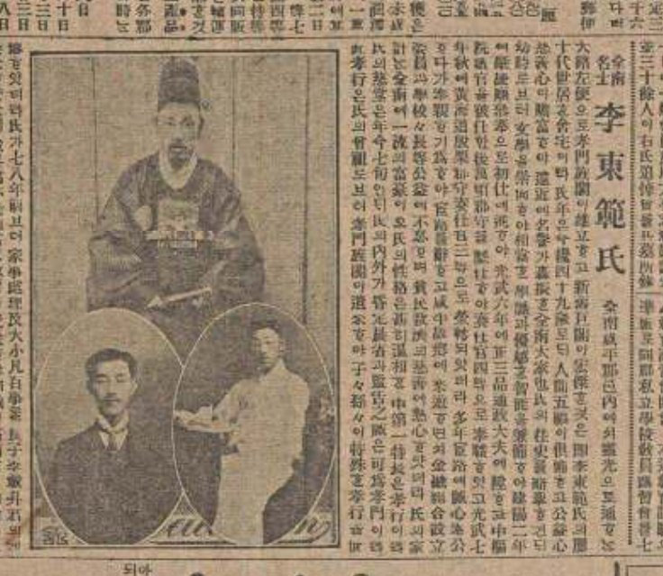
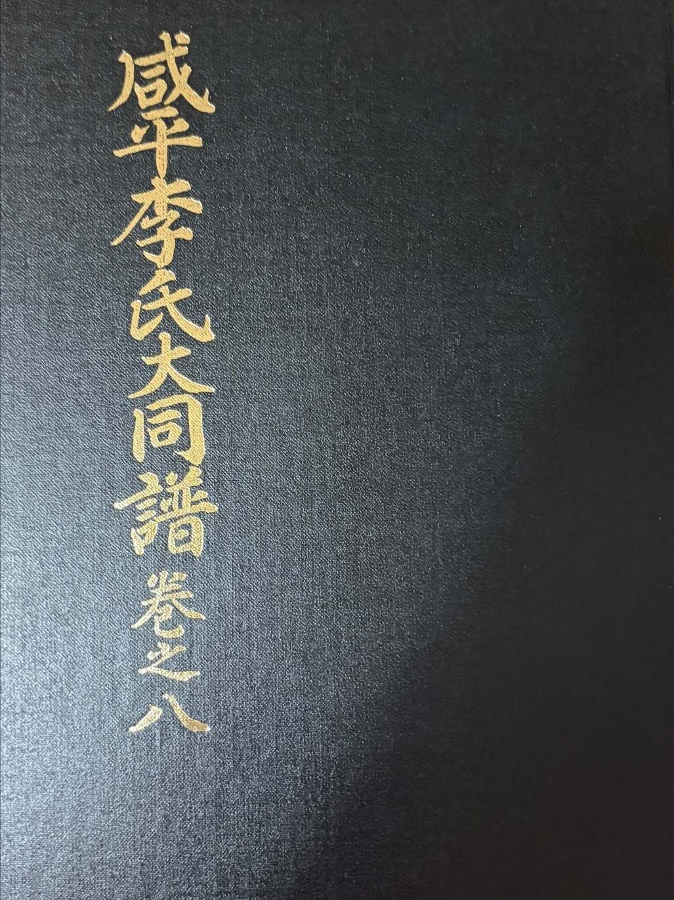
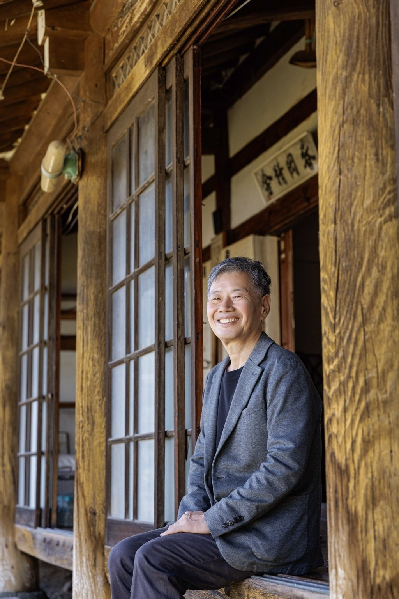
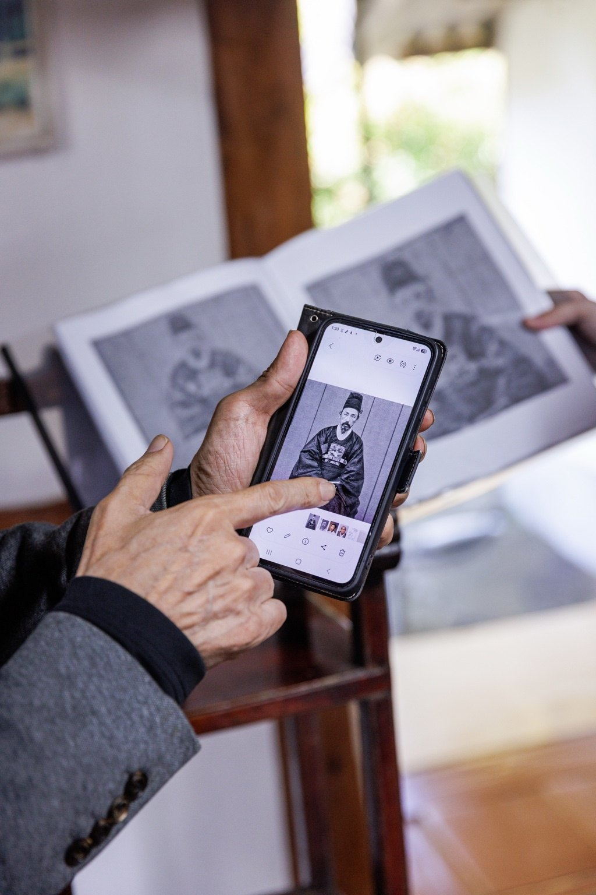
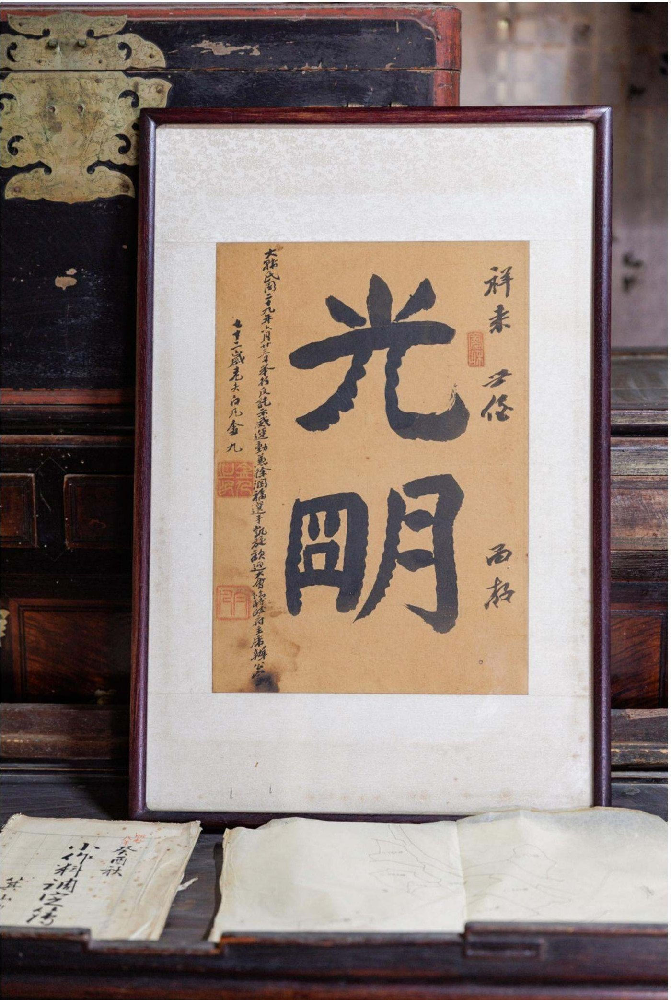

종가와 이재혁 가옥 — 두 집에 남은 128년
함평 이동범가, 128년의 인연 | 제4편
1898년, 청년 김구 선생이 약 보름 동안 머물렀던 함평의 ‘이 진사’ 댁. 앞선 세 편에서는 『백범일지』에 기록된 김구 선생과 석암 이동범 선생의 인연, 집안의 가풍과 은신 이야기, 그리고 광복 후 다시 이어진 인연과 「光明」 휘호를 소개했습니다.
이번에는 그 이야기의 무대였던 함평 이동범가의 두 가옥을 살펴보려고 합니다. 이동범 선생의 장남 이재승으로 이어진 종가와 차남 이재혁의 가옥입니다. 두 가옥은 같은 가문에서 이어져 왔지만, 오늘날 서로 다른 역사적 상황에 놓여 있습니다.
한쪽은 오랫동안 후손들이 지켜온 현존 종가이고, 다른 한쪽은 문화유산으로 지정되어 알려진 이재혁 가옥입니다. 저희 아버지와 제가 이번 조사를 진행하면서 특히 중요하게 생각한 것도 바로 이 두 가옥의 관계를 정확히 밝히는 일이었습니다.
1. 이동범과 두 아들
1편에서 소개한 석암 이동범(石庵 李東範, 1869~1940) 선생은 1917년 7월 8일 『매일신보』에 전남의 명사로 소개되었고, 이 기사에는 가족관계도 기록되어 있습니다. 이동범 선생의 장남은 이재승(李載昇, 1890~1962), 차남은 이재혁(李載赫)입니다. 이 관계는 집안에 전해지는 『함평이씨대동보』와 1917년 신문기사를 통해 확인할 수 있습니다.
장남 이재승의 계통으로 이어진 집이 저희 종가이고, 차남 이재혁의 이름으로 알려진 가옥은 오늘날 문화유산으로 관리되고 있습니다.
저희 집안의 계보는 이동범 선생에서 이재승 선생, 저희 할아버지 이상래(李祥來, 1909~1970) 선생을 거쳐 아버지 이일완으로 이어집니다. 저는 그 다음 세대의 후손입니다.


2. 지금도 남은 종가
함평읍 함평리에는 현재도 이동범·이재승 계통의 종가 본채가 남아 있습니다. 이곳은 저희 아버지가 오랫동안 지켜온 집이기도 합니다. 이번 백범김구기념관 인터뷰 역시 이 종가에서 진행되었습니다. 아버지가 오래된 집의 마루에 앉아 김구 선생과 조상들의 이야기를 들려주시는 모습을 보면서, 저는 건물이 남아 있다는 사실이 얼마나 중요한지 새삼 느꼈습니다.
집은 단순히 사람이 거주하는 공간만은 아닙니다. 여러 세대의 기억이 쌓이고, 가족의 삶과 역사가 이어지는 장소이기도 합니다. 특히 저희 종가는 『백범일지』에 등장하는 ‘이 진사’의 후손들이 오늘날까지 지켜오고 있다는 점에서 의미가 있습니다. 다만 여기서 한 가지는 정확히 구분해야 합니다.
현재의 종가 본채가 1898년 김구 선생이 머무르셨던 당시의 건물과 동일한지는 아직 확인되지 않았습니다.
건물의 건립연대와 증개축 이력, 주요 목재와 구조의 연혁은 앞으로 전문적인 조사를 통해 확인해야 합니다. 『백범일지』에 등장하는 육모정과 토굴, 집안에 전해지는 다락방의 은신 이야기 역시 당시의 공간과 현재의 건축물을 구분하여 살펴볼 필요가 있습니다.
저희 가족은 종가가 현존한다는 사실을 소중하게 생각하지만, 그 사실만으로 128년 전의 건물이 그대로 남아 있다고 주장하려는 것은 아닙니다. 오히려 현재 남아 있는 건물과 옛 기록을 정확히 대조함으로써 그 역사를 밝히고 싶습니다.


3. 2003년 보고서
한편 함평리 379-2에는 이동범 선생의 차남 이재혁의 이름으로 알려진 가옥이 있습니다. 2003년 12월 전라남도 문화재위원회 심의를 위해 「함평 이재혁 가옥 조사보고서」가 작성되었고, 이를 바탕으로 이 가옥은 2004년 2월 13일 전라남도 문화유산으로 지정되었습니다. 이 보고서는 가옥의 건축적 특성과 연혁을 조사한 중요한 자료입니다.
보고서는 이 집이 ‘이진사가(李進士家)’로 알려져 왔고, 이동범 선생이 지은 집이라고 적고 있습니다. 또 현재의 이재혁 가옥을 “원래 사랑채였던” 건물로 설명하고 있어, 당시에는 여러 채의 건물이 하나의 가옥군을 이루었음을 짐작하게 합니다.
특히 보고서에는 현존 사랑채가 1917년, 문간채가 1929년에 건립된 것으로 조사되어 있습니다. 이는 1898년 김구 선생의 함평 체류 시점보다 뒤의 일입니다. 따라서 현재 확인되는 이재혁 가옥의 건물들을 모두 김구 선생이 머물렀던 당시의 건물로 보아서는 안 됩니다. 보고서는 또 김구 선생이 머물렀다고 전해지는 다락방이 “본채 7칸 집”에 있었고, 그 본채는 헐리어 팔려 갔다고 전하고 있습니다.
그런데 여기에서 주의해야 할 부분이 있습니다.
보고서는 헐린 7칸 본채가 정확히 어느 위치의 어떤 건물이었는지 밝히지 않고 있으며, 지금 남아 있는 이재승 계통의 종가 본채는 보고서의 조사 대상에 포함되지 않았습니다.
보고서의 조사 대상 소재지는 함평리 379-2이고, 저희 종가 본채는 그와 다른 지번에 있습니다. 물론 지번이 다르다는 사실만으로 두 건물이 처음부터 별개였다고 단정할 수는 없습니다. 대지가 나중에 분할되었을 가능성도 있기 때문입니다. 다만 같은 이유로, 보고서에 기록된 본채 철거를 현재 남아 있는 종가 본채의 소실과 곧바로 같은 일로 볼 수도 없습니다.
헐린 본채가 어디에 있었는지, 두 가옥이 과거에 어떠한 배치 관계에 있었는지, 대지가 어떻게 분할되고 승계되었는지는 추가 조사가 필요합니다. 저희가 밝히고 싶은 것은 단순히 어느 집이 더 오래되었는지의 문제가 아닙니다. 두 가옥이 하나의 가문 안에서 어떠한 관계를 맺고 변화해 왔는지를 정확하게 이해하는 일입니다.
4. 한 가문, 두 집
이동범·이재승 종가와 이재혁 가옥을 살펴보면서 제가 중요하게 생각하게 된 것은 두 가옥을 서로 완전히 별개의 역사로 이해해서는 안 된다는 점입니다. 두 집은 석암 이동범 선생과 그의 두 아들이라는 공통의 가계에서 출발합니다.
1917년 『매일신보』는 이동범 선생과 두 아들의 관계를 보여주고, 『함평이씨대동보』는 그 계보를 뒷받침합니다. 또한 『백범일지』에는 광복 후 이재승·이재혁 형제가 김구 선생을 찾아뵈었던 이야기가 기록되어 있습니다(3편).[주]
이처럼 두 형제의 역사는 김구 선생과 이동범가의 인연 안에서도 함께 등장합니다. 다만 역사적으로 같은 가문이라는 사실과 두 가옥이 건축적으로 본래 하나의 공간이었다는 사실은 별개의 문제입니다. 과거 두 가옥이 하나의 큰 가옥에서 분리되었는지, 별도의 건물을 신축하여 생활공간이 나뉘었는지, 그 과정에서 안채와 사랑채·문간채가 어떻게 배치되었는지는 현재 확보한 자료만으로 확정하기 어렵습니다.
과거 지적도와 토지대장, 건축 관련 기록, 현존 건축물의 구조를 종합적으로 대조해야 하는 이유입니다. 저희는 앞으로 이 두 가옥의 옛 배치와 변화 과정을 좀 더 구체적으로 밝혀보고자 합니다. 그렇게 해야 김구 선생이 머무르셨던 공간에 관한 기록과 전승도 더욱 정확하게 이해할 수 있을 것입니다.
5. 남아 있는 집
이번 조사를 시작하면서 저희 아버지와 제가 가장 안타깝게 생각했던 부분 중 하나는 후대의 일부 기록에서 이동범 종가의 존재가 충분히 드러나지 않았다는 점입니다. 특정 건물의 철거 기록과 종가 전체의 존속 여부는 구분해야 합니다.
어느 시기에 본채 일부가 철거되었더라도 그것만으로 한 가문의 종가가 사라졌다고 볼 수는 없습니다. 또한 특정 가옥이 문화유산으로 지정되었다는 사실이 같은 가문에 속한 다른 건물의 역사적 가치를 부정하는 것도 아닙니다.
오늘날 이재혁 가옥은 문화유산으로 알려져 있지만, 장남 이재승의 계통으로 이어진 종가 역시 실제로 남아 있습니다. 그리고 그 종가에는 오래된 인물사진과 문헌, 집안의 유물, 세대를 이어 전해진 기억들이 보존되어 있습니다.
그중에는 3편에서 소개한, 1947년의 날짜가 기록된 백범 김구 선생의 「光明」 휘호로 전해지는 실물도 있습니다. 저희가 바라는 것은 두 가옥을 서로 경쟁시키거나 어느 한쪽의 가치를 강조하기 위해 다른 한쪽을 부정하는 일이 아닙니다.
이동범·이재승 종가와 이재혁 가옥을 함께 살펴봄으로써 그동안 충분히 알려지지 않았던 함평 이동범가의 역사를 온전하게 복원하는 것입니다.


6. 다음 걸음
2026년은 백범 김구 선생 탄생 150주년이 되는 해입니다. 올해 백범김구기념관에서 저희 아버지의 인터뷰를 진행해 주신 일을 계기로, 저희 가족 역시 그동안 전해 내려온 이야기와 자료를 더 체계적으로 정리하게 되었습니다. 그리고 2026년 11월, 함평 이동범 종가 본채의 역사적·문화유산적 가치를 조사받기 위해 함평군에 현지조사와 보존 방안 검토를 요청하였습니다.
그 과정에서 현재 종가와 이재혁 가옥의 관계, 옛 육모정의 위치, 다락과 토굴의 연혁, 건물의 건립 시기 등을 객관적으로 확인해 주시기를 바라고 있습니다. 현지조사 요청이 곧 문화유산 지정이나 역사적 사실의 확정을 의미하는 것은 아닙니다.
그것은 오히려 이제부터 확인해야 할 질문들을 공식적인 조사와 기록으로 이어가기 위한 첫걸음입니다. 저는 역사라는 것이 오래된 기록을 찾아내는 일에서 끝나지 않는다고 생각합니다. 기록이 가리키는 장소를 찾아가고, 지금도 남아 있는 건물을 살펴보고, 그 안에서 살아온 사람들의 기억을 함께 듣는 일이 필요합니다.
『백범일지』 속 작은 한 대목에서 시작된 저희 가족의 조사는 이제 이동범 선생과 두 아들, 종가와 이재혁 가옥, 그리고 함평의 근현대사를 함께 살펴보는 일로 이어지고 있습니다. 128년 전 김구 선생이 머무르셨던 집의 정확한 모습은 아직 더 밝혀야 합니다. 하지만 그 인연을 기억하며 종가를 지켜온 후손들이 있고, 그 역사를 확인할 수 있는 문헌과 유물, 그리고 현재 남아 있는 공간이 있습니다.
저희는 앞으로도 확인된 사실은 정확히 기록하고, 아직 밝혀지지 않은 부분은 꾸준히 조사해 나가려고 합니다.
충분히 알려지지 않았던 역사의 일부를 다시 살펴보고, 지금도 남아 있는 공간의 가치를 제대로 기록하는 것.
그것이 저희 아버지와 제가 이번 조사를 이어가는 이유입니다.
백범김구기념관 공식 인터뷰
지난 글
주
[주] 『백범일지』 원서는 광복 후 찾아온 두 사람을 이 진사의 ‘종손’ 재승(在昇)·재혁(在赫)으로 적고 있으나, 족보와 1917년 『매일신보』 기사상 이동범의 아들 이재승(載昇)·이재혁(載赫)으로, 원서의 오기로 판단됩니다.
주요 참고자료
[1] 김구, 『백범일지』, 1898년 함평 체류(127쪽) 및 광복 후 이재승·이재혁 형제와의 재회(336~337쪽) 관련 기록.
[2] 『매일신보』, 1917년 7월 8일, 이동범 인물 및 가족관계 관련 기사.
[3] 『함평이씨대동보』, 이동범·이재승·이재혁 계보 관련 기록.
[4] 박강철·김지민·천득염·김희태, 「함평 이재혁 가옥 조사보고서」, 『지방문화재 지정조사 보고서(3)』(전라남도 문화재위원회 심의자료), 2003. 12. 23.
[5] 함평 이동범가 소장 사진·문헌·「光明」 휘호 및 후손 구술.
[6] 2026년 11월 14일 수정·보완된 함평 이동범 종가 문화유산 현지조사·지정 검토 및 역사문화 홍보 협조 요청 민원(접수번호 1AA-2611-0520303).
이 글은 현재까지 확인된 문헌, 가족 소장자료와 후손의 구술을 바탕으로 작성하였습니다. 역사적 사실과 가족 전승, 건축적 추정 및 향후 조사 과제를 구분하였으며, 추가 사료와 전문적인 현지조사 결과에 따라 내용을 보완할 예정입니다.